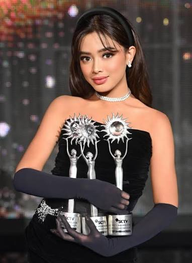

Aqeela Calista
Aqeela Calista adalah aktris sekaligus penyanyi muda Indonesia yang namanya kini sedang naik daun. Terlahir dengan nama lengkap Aqeela Aza Calista, dara kelahiran 14 Juni 2008 ini sudah malang melintang di dunia hiburan Indonesia sejak masih kecil. Aqeela terlahir dari pasangan Dimas Singgih Utomo dan Indriarti Edison. Ia juga memiliki seorang adik bernama Ammar Mahija Razzaq. Dukungan keluarga menjadi salah satu faktor penting yang mendorongnya untuk terus berkembang di dunia seni peran. Karier Aqeela sendiri dimulai sejak ia masih berusia 2 tahun. Mengutip Tribunnews, ia debut dalam sinetron 'Putri yang Ditukar' karakter Aini kecil pada tahun 2010 silam. Sejak saat itu, bakatnya mulai terlihat dan membuka jalan bagi berbagai peran lainnya. Dua tahun kemudian, tepatnya pada 2012, Aqeela kembali tampil dalam sinetron 'Anugerah' sebagai karakter Mayang atau Cinta. Penampilannya yang konsisten membuat namanya semakin dikenal oleh publik. Popularitasnya pun semakin meningkat saat ia bermain dalam sinetron 'Indah Kasih Bunda' dan 'Berkah Cinta' pada tahun 2017. Kedua sinetron tersebut menjadi titik penting dalam perjalanan kariernya, karena berhasil memperluas jangkauan penggemarnya. Kemudian namanya pun semakin populer setelah ia unjuk kebolehan di sinetron 'Dari Jendela SMP' dan dilanjutkan dengan viralnya 'Asmara Gen Z'.
Kreativitas
Aktris muda Aqeela Calista berhasil membawa pulang tiga piala dalam malam puncak Infotainment Awards 2026 yang digelar di Studio 6 Emtek City, Jakarta, Selasa (22/9/2026) malam. Aktris muda Aqeela Calista berhasil membawa pulang tiga piala dalam malam puncak Infotainment Awards 2026 yang digelar di Studio 6 Emtek City, Jakarta, Selasa (22/9/2026) malam. Dan banyak lagi kreatifitas aqeela calista dalam entertainment.
Media Digital
Selain berkarier di dunia hiburan, Aqeela Calista juga aktif di media digital. Ia memanfaatkan platform-platform online untuk berbagi pengalaman, tips, dan inspirasi kepada penggemarnya.
Peran Penggemar
Penggemar memiliki peran penting dalam perjalanan karier Aqeela Calista. Dukungan dan apresiasi dari penggemar menjadi motivasi bagi Aqeela untuk terus berkarya dan memberikan yang terbaik dalam setiap proyeknya.
Komentar pembaca